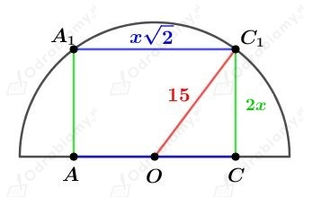

Dany jest graniastosup prawidowy szecioktny.
Walec wpisany i opisany na tym graniastosupie ma wysoko r贸wn wysokoci H tego graniastosupa.
Niech a bdzie dugoci krawdzi podstawy tego graniastosupa.
Aby obliczy promie walca opisanego w ten graniastosup oraz walca wpisanego w ten graniastosup narysujmy przekr贸j tych bry widziany z g贸ry:
Promie r walca wpisanego w ten graniastosup ma dugo r贸wn dugoci wysokoci tr贸jkta r贸wnobocznego o boku dugoci a. Mamy:
Promie walca opisanego na tym graniastosupie ma dugo krawdzi podstawy tego graniastosupa. Mamy:
Obliczmy objto walca wpisanego w ten graniastosup. Mamy:
Obliczmy objto walca opisanego na tym graniastosupie. Mamy:
Wyznaczmy stosunek objtoci walca opisanego na tym graniastosupie do objtoci walca w niego wpisanego. Mamy:
Dany jest prostopadocian, kt贸rego podstawa jest kwadratem o boku dugoci a i o wysokoci dugoci H.
Wiedzc, 偶e pole powierzchni cakowitej tego prostopadocianu wynosi 16 mamy:
W podany prostopadocian wpisano walec.
Wysoko tego walca ma dugo r贸wn dugoci wysokoci prostopadocianu, a promie jego podstawy ma dugo 1/2a.
Obliczmy pole powierzchni cakowitej tego walca. Mamy:
Dany jest graniastosup przedstawiony na rysunku:
Obliczmy dugo przeciwprostoktnej c. Korzystajc z twierdzenia Pitagorasa mamy:
a)
Na tym graniastosupie opisano walec. Dugo wysokoci tego walca r贸wnie偶 jest r贸wna 5.
Promie R podstawy tego walca jest r贸wny dugoci promienia okrgu opisanego na tr贸jkcie prostoktnym bdcym podstaw tego graniastosupa. Mamy wic:
Obliczmy objto tego walca. Mamy:
b)
W ten graniastosup wpisano walec. Dugo wysokoci tego walca r贸wnie偶 jest r贸wna 5.
Promie r podstawy tego walca jest r贸wny dugoci promienia okrgu wpisanego w tr贸jkt prostoktny bdcy podstaw tego graniastosupa. Mamy wic:
Obliczmy objto tego walca. Mamy:
Dany jest sto偶ek o promieniu podstawy dugoci 3 i wysokoci dugoci H.
Dany jest walec opromieniu podstawy dugoci 2 i wysokoci dugoci 4.
W podany sto偶ek wpisano ten walec.
Rysunek:
Korzystajc z podobiestwa tr贸jkt贸w KBS i PES otrzymujemy:
Zatem:
Obliczmy objto tego sto偶ka. Mamy:
Dany jest walec o promieniu podstawy dugoci 5 i wysokoci dugoci h.
W ten walec wpisano sto偶ek o promieniu podstawy dugoci 5, tworzcej dugoci l i wysokoci dugoci h.
Rysunek:
Powierzchnia boczna tego sto偶ka po rozwiniciu jest poow koa. Mamy std:
Korzystajc z twierdzenia Pitagorasa dla tr贸jkta PBS mamy:
Wyznaczmy pole powierzchni cakowitej tego walca. Mamy:
W walec wpisano sto偶ek.
Rysunek:
Pola powierzchni bocznych tych bry s r贸wne. Zapiszemy wic:
Wyznaczmy cosinus kta /2. Mamy:
Zatem
czyli
Rysunek:
Oznaczmy jako
r1- promie podstawy walca - mniejszej "podstawy sto偶ka"
r2- promie podstawy wikszej sto偶ka
h - wysoko du偶ego sto偶ka
x - wysoko sto偶ka kt贸ry zosta odcity
Z treci zadania wiemy, 偶e
Z podobiestwa tr贸jkt贸w zachodzi r贸wnie偶
Obliczmy objto sto偶ka citego. Jest to objto du偶ego sto偶ka pomniejszona o objto sto偶ka kt贸ry zosta ucity.
Obliczmy objto walca:
Stosunek objtoci
Dany jest sto偶ek city o promieniach podstawy dugoci r1 i r2 oraz o tworzcej dugoci l.
W podan bry mo偶na wpisa kul o promieniu dugoci R.
Naszkicujmy przekr贸j:
Trapez ABCD jest trapezem r贸wnoramiennym, w kt贸rym mo偶na wpisa okrg. Mamy std:
Korzystajc z twierdzenia Pitagorasa dla tr贸jkta PBC otrzymujemy:
Korzystajc z podobiestwa tr贸jkt贸w KBE i LCE otrzymujemy:
Z treci zadania wiemy, 偶e objto danej kuli jest cztery razy mniejsza od objtoci tego sto偶ka citego. Mamy std:
Podstawiajc wczeniej wyznaczone h mamy:
Podstawiajc wczeniej wyznaczone R mamy:
Obie strony r贸wnoci s dodatnie, wic mamy:
Wyznaczmy sinus kta . Mamy:
Naszkicujmy przekr贸j przechodzcy przez przektn podstawy szecianu:
Korzystajc z twierdzenia Pitagorasa dla tr贸jkta OCC1 otrzymujemy:
Wyznaczmy objto tego szecianu. Mamy:
Dany jest prostopadocian, kt贸ry ma osiem krawdzi dugoci x i cztery krawdzie dugoci 2x.
Podany prostopadocian zawarty jest w p贸kuli o promieniu dugoci 15.
Przypadek I
Podstaw tego prostopadocianu jest kwadrat o boku dugoci x, a wysoko tego prostopadocianu ma dugo 2x.
Rysunek:

Korzystajc z twierdzenia Pitagorasa dla tr贸jkta OCC1 mamy:
Wyznaczmy objto tego prostopadocianu. Mamy:
Przypadek II
Podstaw tego prostopadocianu jest prostokt o bokach dugoci x i 2x, a wysoko tego prostopadocianu ma dugo x.
Wyznaczmy dugo c przektnej podstawy. Korzystajc z twierdzenia Pitagorasa mamy:
Rysunek:
Korzystajc z twierdzenia Pitagorasa dla tr贸jkta OCC1 mamy:
Wyznaczmy objto tego prostopadocianu. Mamy:
Wiksz objto otrzymamy w przypadku II.
Najwiksza mo偶liwa objto tego prostopadocianu wynosi 2000.